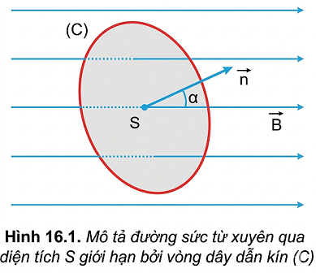
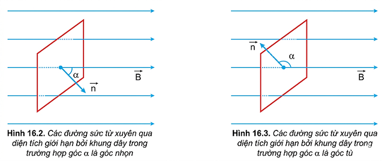
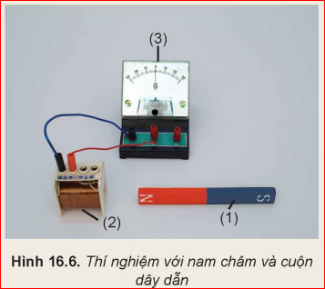
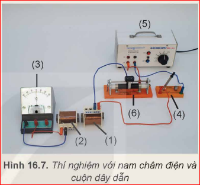
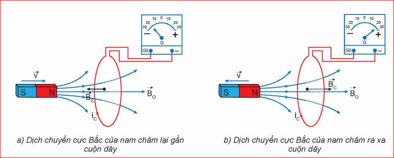
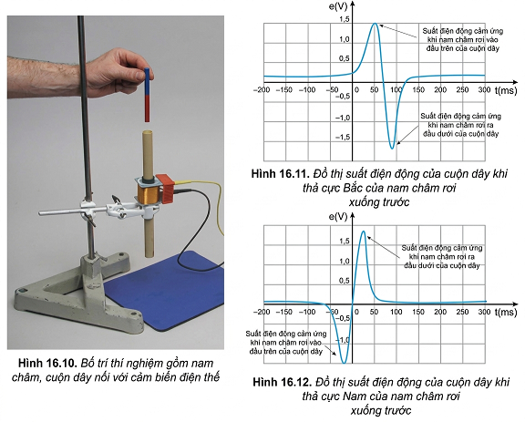

Khi số đường sức từ xuyên qua tiết diện của cuộn dây dẫn kín biến thiên thì trong cuộn dây dẫn đó xuất hiện dòng điện cảm ứng. Hãy cho biết có những cách nào làm cho số đường sức từ qua tiết diện của cuộn dây dẫn kín biến thiên?
I. TỪ THÔNG
Xét một vòng dây dẫn kín (C) có diện tích S, được đặt trong từ trường đều B. Vẽ vectơ đơn vị pháp tuyến \( \vec{n} \) của S. Chiều của \( \vec{n} \) có thể chọn tuỳ ý. Góc hợp thành bởi \( \vec{B} \) và \( \vec{n} \) kí hiệu là \( \alpha \).
Đại lượng \( \Phi \) gọi là từ thông qua diện tích S. Đơn vị của từ thông trong hệ SI là vêbe (weber), kí hiệu Wb.
Ta có: \( 1 \, \text{Wb} = 1 \, \text{T} \cdot 1 \, \text{m}^2 \).

Hình 16.1. Mô tả đường sức từ xuyên qua diện tích S giới hạn bởi vòng dây dẫn kín (C)
Thảo luận 1 (Trang 64): Khi cảm ứng từ \( \vec{B} \) vuông góc với mặt phẳng vòng dây thì \( \alpha = 0 \), hãy so sánh trị số từ thông với độ lớn cảm ứng từ khi diện tích vòng dây là \( 1 \, \text{m}^2 \).
? Từ công thức (16.1), hãy cho biết khi nào từ thông có giá trị dương, âm hoặc bằng 0.

- \( \Phi < 0 \) khi \( \cos(\alpha) < 0 \) (góc \( \alpha \) tù: \( 90^\circ < \alpha \le 180^\circ \)).
- \( \Phi = 0 \) khi \( \cos(\alpha) = 0 \) (\( \alpha = 90^\circ \), \( \vec{B} \) song song mặt phẳng S).
II. HIỆN TƯỢNG CẢM ỨNG ĐIỆN TỪ
1. Thí nghiệm
Thí nghiệm 1: Nam châm chuyển động
Cho nam châm chuyển động lại gần hoặc ra xa một cuộn dây dẫn kín được nối với điện kế G.
- Khi nam châm chuyển động: Kim điện kế G bị lệch, chứng tỏ trong cuộn dây xuất hiện dòng điện.
- Khi nam châm dừng lại: Kim điện kế G trở về vạch số 0, dòng điện biến mất.

Hình 16.2a. Thí nghiệm nam châm chuyển động
Thí nghiệm 2: Thay đổi dòng điện
Thay nam châm vĩnh cửu bằng một nam châm điện đặt gần cuộn dây kín.
- Khi đóng/ngắt mạch: Hoặc thay đổi cường độ dòng điện qua nam châm điện bằng biến trở, kim điện kế G bị lệch.
- Khi dòng điện ổn định: Kim điện kế G không lệch.

Hình 16.2b. Thí nghiệm với nam châm điện
Hoạt động (Trang 65): Dựa vào các thí nghiệm trên, hãy mô tả cách làm biến thiên từ thông và nhận xét sự xuất hiện của dòng điện cảm ứng.
- Thí nghiệm 1: Di chuyển nam châm làm thay đổi mật độ đường sức từ qua cuộn dây.
- Thí nghiệm 2: Thay đổi cường độ dòng điện làm thay đổi độ lớn cảm ứng từ B.
Nhận xét: Dòng điện cảm ứng chỉ xuất hiện khi từ thông qua cuộn dây biến thiên.
2. Kết luận
- Mỗi khi từ thông qua mạch kín biến thiên thì trong mạch kín xuất hiện một dòng điện gọi là dòng điện cảm ứng.
- Hiện tượng xuất hiện dòng điện cảm ứng trong mạch kín gọi là hiện tượng cảm ứng điện từ.
- Hiện tượng cảm ứng điện từ chỉ tồn tại trong khoảng thời gian từ thông qua mạch kín biến thiên.
Thảo luận 2: Nếu mạch điện không kín thì khi từ thông biến thiên có xuất hiện dòng điện cảm ứng không? Có hiện tượng gì xảy ra?
III. ĐỊNH LUẬT LENZ VỀ CHIỀU DÒNG ĐIỆN CẢM ỨNG
"Dòng điện cảm ứng xuất hiện trong mạch kín có chiều sao cho từ trường cảm ứng có tác dụng chống lại sự biến thiên của từ thông ban đầu qua mạch kín."

Hình 16.5. Chiều dòng điện cảm ứng khi nam châm rơi qua vòng dây
Suy nghĩ (Trang 67): Dựa vào định luật Lenz, hãy giải thích tại sao khi từ thông tăng, từ trường cảm ứng lại ngược chiều với từ trường ban đầu?
IV. ĐỊNH LUẬT FARADAY VỀ CẢM ỨNG ĐIỆN TỪ
Độ lớn suất điện động cảm ứng xuất hiện trong mạch kín tỉ lệ với tốc độ biến thiên từ thông qua mạch đó.
Nếu cuộn dây có N vòng dây:
Dấu "-" biểu thị định luật Lenz. Trong tính toán độ lớn, ta dùng giá trị tuyệt đối.
Thảo luận 3: Ý nghĩa của dấu trừ trong công thức định luật Faraday là gì?
EM CÓ BIẾT
Thí nghiệm của Faraday chứng tỏ trọng lực sinh công làm biến thiên từ thông để sinh ra suất điện động. Bản chất là quá trình chuyển hóa cơ năng thành điện năng. Đây là cơ sở cho các máy phát điện hiện đại ngày nay.

EM CÓ THỂ
Nêu được nguyên tắc hoạt động của máy phát điện dựa trên hiện tượng cảm ứng điện từ: chuyển hóa cơ năng thành điện năng thông qua việc làm biến thiên từ thông qua các cuộn dây.
V. BÀI TẬP CỦNG CỐ
Câu 1: Đơn vị của từ thông trong hệ SI là:
Câu 2: Từ thông đạt giá trị cực đại khi góc giữa vectơ pháp tuyến của diện tích và vectơ cảm ứng từ là:
Câu 3: Hiện tượng cảm ứng điện từ xuất hiện trong một mạch kín khi:
Câu 4: Theo định luật Lenz, dòng điện cảm ứng có chiều sao cho từ trường mà nó sinh ra có tác dụng:
Câu 5: Suất điện động cảm ứng xuất hiện trong mạch tỉ lệ thuận với:
Đáp án chi tiết:
1-B; 2-C; 3-C; 4-A; 5-B.
VI. BÀI TẬP VẬN DỤNG
Bài 1: Một khung dây phẳng diện tích \( 5 \, \text{cm}^2 \), gồm 50 vòng dây đặt trong từ trường đều \( B = 0,2 \, \text{T} \). Vectơ pháp tuyến hợp với \( \vec{B} \) góc \( 60^\circ \). Tính từ thông qua khung dây.
- Áp dụng công thức: \( \Phi = N \cdot B \cdot S \cdot \cos\alpha \)
- Thay số: \( \Phi = 50 \cdot 0,2 \cdot (5 \cdot 10^{-4}) \cdot \cos(60^\circ) \)
- Kết quả: \( \Phi = 50 \cdot 0,2 \cdot 0,0005 \cdot 0,5 = 0,0025 \, \text{Wb} \).
Bài 2: Từ thông qua một mạch kín biến thiên đều từ \( 0,8 \, \text{Wb} \) đến \( 0,2 \, \text{Wb} \) trong khoảng thời gian \( 0,1 \, \text{s} \). Tính độ lớn suất điện động cảm ứng xuất hiện trong mạch.
- Áp dụng công thức Faraday: \( |e_c| = |\frac{\Delta \Phi}{\Delta t}| \)
- Thay số: \( |e_c| = |\frac{0,2 - 0,8}{0,1}| = |-6| = 6 \, \text{V} \).
- Vậy suất điện động cảm ứng có độ lớn là \( 6 \, \text{V} \).